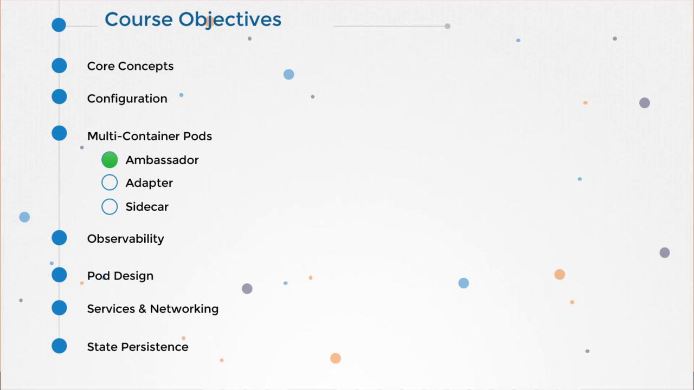
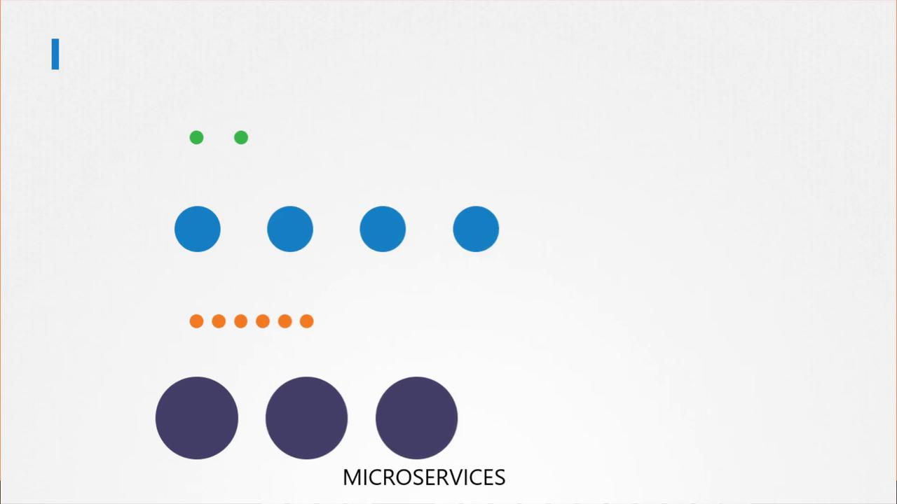
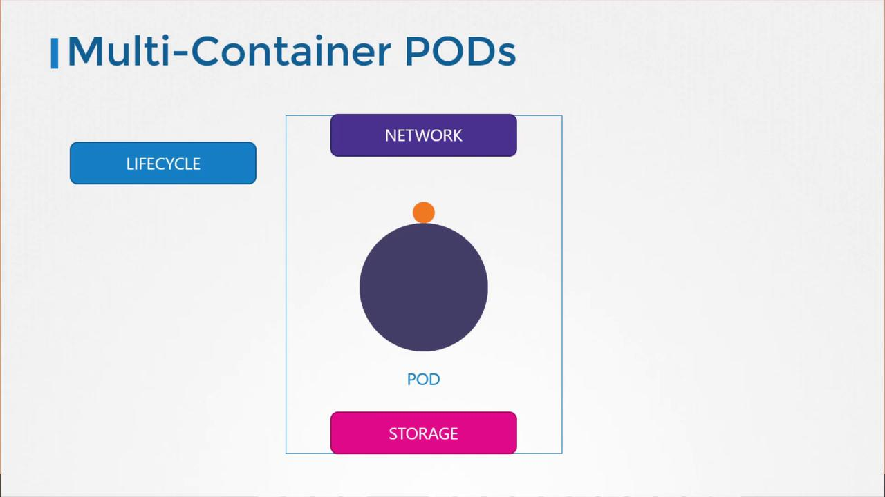
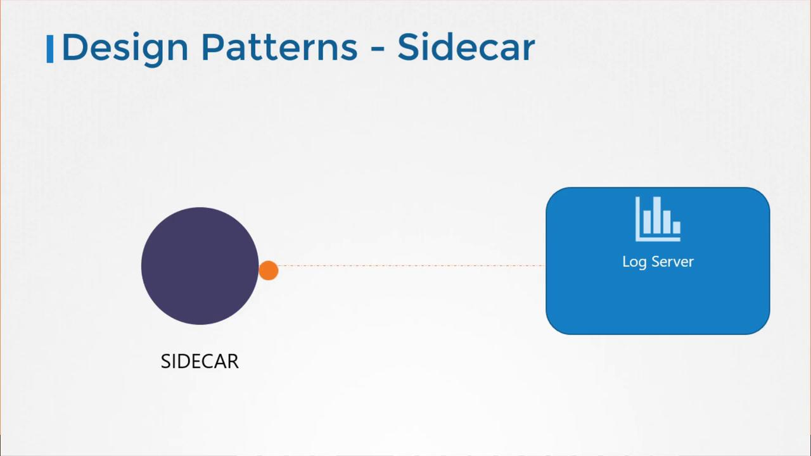
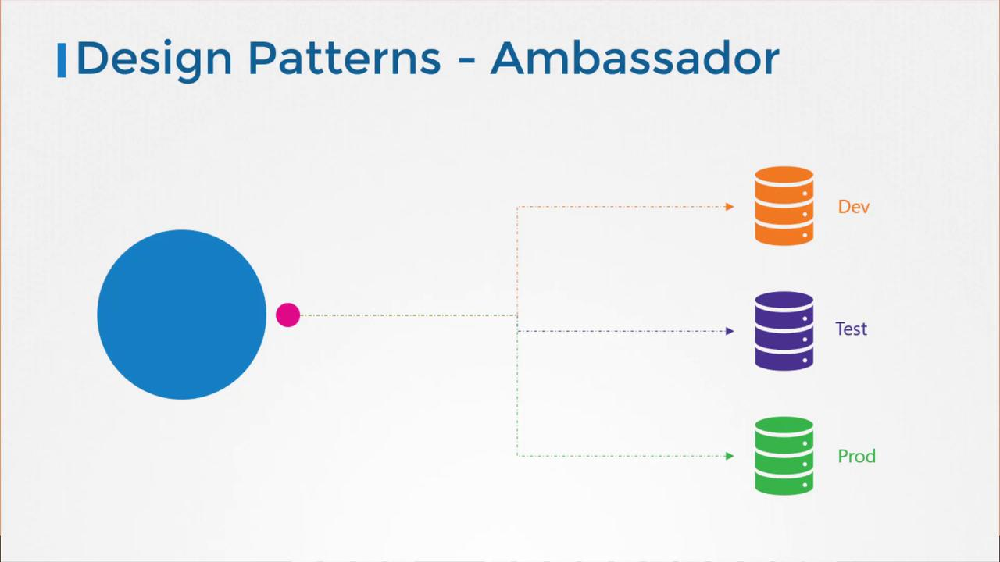

👯♂️ الكبسولات متعددة المحركات (Multi-Container Pods)
أهلاً بيك يا كابتن في المهمة دي! 👨🚀 النهاردة هنتكلم عن إزاي نشغل أكتر من "محرك" (Container) جوه نفس "الكبسولة" (Pod). ده بيسمح لنا نعمل حاجات قوية جداً لما يكون عندنا خدمات لازم تشتغل مع بعض وتتكلم مع بعض بسرعة.

Microservices vs. Tightly Coupled Services
في العالم الحديث (Microservices)، إحنا بنحاول نفصل كل حاجة عن بعضها عشان نقدر نطور ونكبر كل جزء لوحده. زي ما بنفصل "نظام الملاحة" عن "نظام الاتصالات" في السفينة. كل واحد مستقل.

لكن... ساعات بيبقى فيه خدمات لازم تكون "لازقة" في بعض (Tightly Coupled). مثلاً: تخيل عندك "سيرفر الويب" (Web Server) ومحتاج معاه "مساعد" (Log Agent) يلم السجلات بتاعته فوراً ويبعتها للمركز الأرضي. في الحالة دي، بنحطهم هما الاتنين في نفس الـ Pod.
✨ مميزات الكبسولات المتعددة (Advantages)
- Shared Lifecycle: بيموتوا ويصحوا مع بعض. لو الكبسولة انفجرت، الاتنين راحوا! 💀
- Unified Network Namespace: بيكلموا بعض عن طريق `localhost` من غير تعقيدات الشبكة.
- Shared Storage Volumes: بيقدروا يقروا ويكتبوا في نفس المكان (Disk).

🛠️ إزاي نعملها؟ (YAML)
بسيطة جداً! في ملف الـ YAML، تحت قائمة `containers`، بنزود واحد كمان.
apiVersion: v1
kind: Pod
metadata:
name: simple-webapp
labels:
name: simple-webapp
spec:
containers:
- name: simple-webapp
image: simple-webapp
ports:
- containerPort: 8080
- name: log-agent
image: log-agent
🎨 أنماط التصميم (Design Patterns)
فيه 3 أشكال مشهورة للمساعدين دول، مش لازم تحفظهم نظري بس افهم الفكرة:
1. Sidecar Pattern 🏍️
زي "الموتوسيكل" اللي فيه "عربية جانبية". التطبيق الأساسي هو الموتوسيكل، والـ Sidecar هو المساعد اللي بيعمل شغلانة إضافية (زي تجميع الـ Logs).

2. Adapter Pattern 🔌
زي "مشترك الكهرباء". لو التطبيق بيطلع Logs بشكل غريب، الـ Adapter بياخدها ويحولها لشكل موحد (Standard) عشان نعرف نقراها.
3. Ambassador Pattern 🤵
زي "السفير". التطبيق عايز يكلم الداتابيز، بس مش عارف يكلم "Dev" ولا "Prod". بيقوم مكلم الـ Ambassador (على localhost) والسفير هو اللي يوجهه للمكان الصح.
